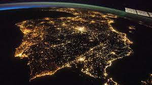
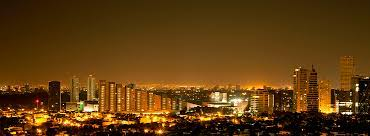

ESTA CONTAMINACIÓN SE PRODUCE POR EL RESPLANDOR O BRILLO DE LA LUZ QUE SE VE EN LA NOCHE, DEBIDO A LA REFLEXIÓN Y DIFUSIÓN DE LAS LUCES ARTIFICIALES
CON ALTA INTENSIDAD EN LAS PARTÍCULAS Y GASES QUE SE ENCUENTRAN EN EL AIRE. EN ESTE OTRO POST PUEDES DESCUBRIR MÁS SOBRE LA CONTAMINACIÓN LUMÍNICA.

LA DEFINICIÓN DE LA CONTAMINACIÓN LUMÍNICA ES UN TEMA BASTANTE DISCUTIDO. UNA DE LAS DEFINICIONES ESTABLECE
QUE LA INTRODUCCIÓN DE LUZ ARTIFICIAL PRODUCE UNA DEGRADACIÓN DE LOS ECOSISTEMAS O EL ESTADO NATURAL..
COMO NOS AFECTA LA CONTAMINACION LUMINICA:
LA ELEVADA EXPOSICIÓN NOCTURNA A FUENTES LUMINOSAS GENERA CANSANCIO, NERVIOSISMO Y PUEDE OCASIONAR TRASTORNOS DEL ESTADO DE ÁNIMO COMO DEPRESIÓN,
AL PERTURBAR EL CICLO LUZ-OSCURIDAD. PARECE EXISTIR, ADEMÁS, UNA RELACIÓN ENTRE CONTAMINACIÓN LUMÍNICA Y MAYOR RIESGO DE PATOLOGÍAS COMO DIABETES,
OBESIDAD O CÁNCER..

CÓMO PODEMOS EVITAR LA CONTAMINACIÓN LUMÍNICA:
1.ORIENTAR BIEN LOS PUNTOS DE ILUMINACIÓN.
2.UTILIZAR SENSORES DE MOVIMIENTO.
3.USAR LÁMPARAS POCO CONTAMINANTES.
4.ILUMINAR SOLO LO IMPRESCINDIBLE.
5.PROHIBIR LUCES PROYECTADAS AL CIELO.
6.APAGAR LAS LUCES CUANDO NO LAS ESTEMOS USANDO.
CÓMO AFECTA LA CONTAMINACIÓN LUMÍNICA EN LA BIODIVERSIDAD:
ALTERA CONDUCTAS EN ANIMALES: SUEÑO, MIGRACIÓN, BÚSQUEDA DE ALIMENTOS (DESORIENTACIÓN), REPRODUCCIÓN. AUMENTA LA MORTALIDAD EN ESPECIES
NOCTURNAS POR DEBILITAMIENTO DE LA VISTA Y EXPOSICIÓN A DEPREDADORES (30% DE LOS VERTEBRADOS Y MÁS DEL 60% DE LOS INVERTEBRADOS SON NOCTURNOS).